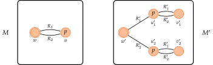

Supplement to Philosophical Aspects of Multi-Modal Logic
Non-definability of distributed and common knowledge within \(\cL_{\{\oK{1}, \ldots, \oK{n}\}}\)
As mentioned in section 2.4, the distributed knowledge modality D is not syntactically definable in \(\cL_{\left\{ \oK{1}, \ldots, \oK{n} \right\}}\). This is because, in the standard modal language, an intersection modality is not definable in terms of the modalities of the intersected relations. A simple counter-example showing this is given by the two pointed models below (reflexive edges omitted, undirected edges indicating symmetry, and evaluation point double-circled). They are bisimilar with respect to the relations \(R_1, \ldots, R_n\), and therefore modally equivalent within \(\cL_{\left\{ \oK{1}, \ldots, \oK{n} \right\}}\). Nevertheless, take \({\ohD \varphi} := \lnot {D\lnot\varphi}\): while \({\ohD p}\) holds in the first (i.e., \((M, w) \Vdash {\ohD p}\): there is a world reachable from w via the intersection of \(R_1\) and \(R_2\), namely u, where p holds), it fails in the second (i.e., \((M', w') \not\Vdash {\ohD p}\): there is no world reachable from \(w'\) via the intersection of \(R'_1\) and \(R'_2\)).

Figure 3 [An extended description of figure 3 is in the supplement.]
Similarly, the common knowledge modality C is not syntactically definable in \(\cL_{\left\{ \oK{1}, \ldots, \oK{n} \right\}}\). Intuitively, this is because, even when the set of agents is finite, its intuitive definition requires an infinite sequence
\[ {E\varphi} \land {EE\varphi} \land {EEE\varphi} \land \cdots, \]which is not a formula of the language.
A more formal argument relies not on the concept of bisimulation, but rather on that of compactness. It is well-known that formulas in \(\cL_{\left\{ \oK{1}, \ldots, \oK{n} \right\}}\) can be faithfully translated into formulas of the first-order predicate language, which has the compactness property: if \(\Phi\) is a set of first-order formulas, and every finite subset of it is satisfiable (i.e., has a model), then \(\Phi\) is satisfiable. However, the language \(\cL_{\left\{ \oK{1}, \ldots, \oK{n}, C \right\}}\) does not have such property. Recall that \({E\varphi} := {\oK{1}\varphi} \land \cdots \land {\oK{n}\varphi}\), and define the modal dual \({\ohC\varphi} := \lnot {C\lnot\varphi}\). Now, consider the infinite set
\[ \Phi := {\left\{ {\ohC p} \right\} \cup \left\{ E^k \lnot p \mid k \geq 1 \right\}} \quad \text{with } E^k \text{ an abbreviation of } \underbrace{E\cdots E}_{k \text{ times}}. \]Every finite subset of \(\Phi\) is satisfiable: simply take the largest k such that \(E^k \lnot p \in \Phi\), and built a model in which the unique p world is \(k+1\) worlds away from the evaluation point. However, \(\Phi\) is not satisfiable as, while \(\ohC p \in \Phi\) states that a p world is reachable in a finite number of steps k, each potential such k is cancelled by its corresponding \(E^k \lnot p \in \Phi\). Thus, \(\cL_{\left\{ \oK{1}, \ldots, \oK{n}, C \right\}}\) is not compact, and hence C cannot be defined within \(\cL_{\left\{ \oK{1}, \ldots, \oK{n} \right\}}\).